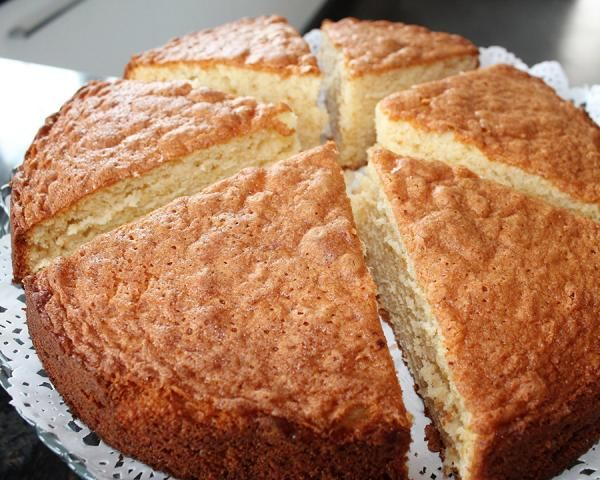

Queque de vainilla

Ingredientes
- 2 unidades de Huevos
- 1 tazas de Harina cernida
- 1 taza de Azúcar (200 gramos)
- 100 gramos de Mantequilla
- 1 cucharaditas de Polvos de hornear
- 60 mililitros de Leche
- 1� cucharaditas de Esencia de vainilla
Preparacion
Lo primero que vamos a hacer para empezar a elaborar nuestro queque de vainilla
tradicional es batir la mantequilla derretida con el az�car hasta obtener una
mezcla espumosa. Precalienta el horno a 200 ºC.
Una vez integrados los ingredientes anteriores, agrega los huevos uno a uno
y altern�ndolos con la harina previamente tamizada. Puedes tamizar la harina
junto con los polvos de hornear o incluirlos en este paso.
Para seguir con nuestra receta de queque de vainilla tradicional deber�s
a�adir la leche y la esencia de vainilla una vez est�n bien mezclados los
ingredientes anteriores. La cantidad estipulada de esencia de vainilla es o
rientativa, puesto que seg�n tus gustos puedes incorporar un poco m�s.
Deber�s mezclar hasta obtener una masa homog�nea y sin grumos. Cuando la
tengas, unta un poco de mantequilla o harina en un molde apto para horno y vierte
la masa de queque de vainilla en �l. Deber�s hornear el queque durante 40
minutos aproximadamente.
Es importante que vigiles el horno puesto que en funci�n de la potencia que
tenga tardar� m�s o menos en hacerse. Si tu horno es muy potente es posible
que en 25 minutos tengas el queque listo, mientras que si no lo es tanto puede
llegar a tardar hasta una hora. Para saber si est� listo realiza la prueba del palillo.
Cuando el palillo salga limpio apaga el horno, deja que el bizcocho se enfr�e y
�listo! Ya tendr�s tu queque de vainilla tradicional preparado para servir.